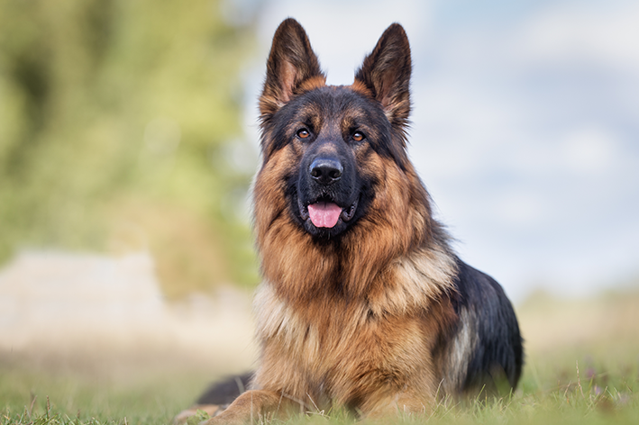

Pastor Alemão

Originário da Alemanha, no final do século XIX, o Pastor Alemão foi desenvolvido inicialmente para o trabalho de pastoreio de ovelhas. Com o tempo, se tornou uma das raças mais versáteis do mundo, atuando também como cão policial, de resgate e de guarda.
Ouça o latido
Veja o em ação
Características
O Pastor Alemão é conhecido por ser extremamente inteligente, leal e protetor com sua família. É uma raça de porte grande, com pelagem densa e energia para atividades físicas diárias.
A raça é reconhecida oficialmente pela CBKC, que estabelece o padrão da raça no Brasil.
Nível de energia:
Facilidade de adestramento:
"O Pastor Alemão é uma das raças mais treináveis que existem, graças à sua inteligência e desejo de agradar."
— Manual Brasileiro de Raças Caninas
Você sabia?
Por muito tempo o Pastor Alemão foi visto apenas como
um cão de guarda agressivo um cão de trabalho
extremamente versátil e afetuoso com a família.
Curiosidade sobre o Pastor Alemão
O Pastor Alemão é uma das raças mais usadas por forças policiais e militares em todo o mundo, devido à sua obediência e capacidade de aprendizado rápido.